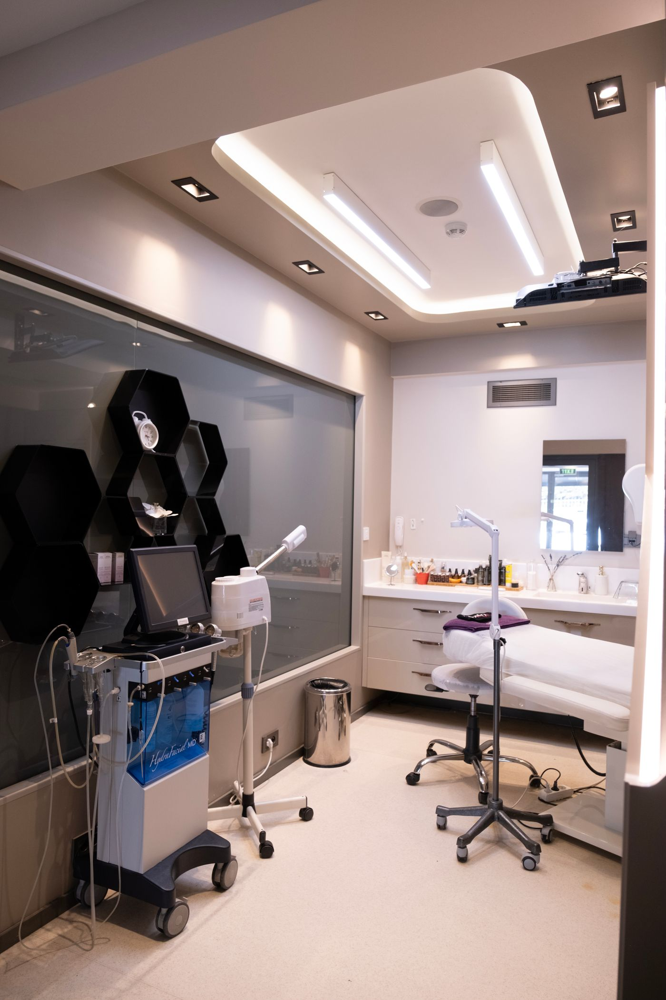

Уходовые процедуры
Уход за кожей лица.
уточняетсяцена — по прайсу центра
Выберите направление, специалиста и удобное время — заявка придёт администратору в Telegram, он перезвонит и подтвердит приём.

Это концепт. С вашими фото и правками будет ещё лучше
Направления центра — по текущему сайту.
Уход за кожей лица.
Процедуры на аппаратах.
После консультации врача.
Массаж и релаксация.
В т.ч. приём трихолога.
Отдельное направление.
Направления — из меню текущего сайта. Прайс на сайте есть по разделам; в демо цены не переносили — их подставят из актуального прайса центра.
Направление → специалист → время → телефон. Это рабочий макет: попробуйте.
Если не уверены — выберите консультацию: процедуру подберёт врач на приёме.
Специалисты — по текущему сайту. Можно не выбирать: администратор подберёт врача по направлению.
Время — по Кемерову. Приём по предварительной записи, воскресенье — выходной; часы уточняются.
Так это будет работать: администратор получает заявку с направлением, специалистом и временем и перезванивает, чтобы подтвердить запись. Сейчас это макет — ничего не отправлено и не сохранено.
Процедуры из блока «Новинки и эксклюзивные услуги» на текущем сайте. Показания и цену определяет врач.
Запишитесь сразу к нужному специалисту.
Главный врач, врач-косметолог.
Врач-косметолог.
Врач-косметолог.
Врач-дерматовенеролог, косметолог, трихолог.
Специалисты — из раздела «Наши специалисты» на главной текущего сайта. Фото врачей — уточняется.
Только то, что опубликовано центром.
По подвалу текущего сайта: лицензия № ЛО-42-01-005596 от 25 сентября 2018 г. Скан и перечень работ — из раздела «Лицензия, сертификаты, дипломы» центра.
Имеются противопоказания, необходима консультация специалиста. Процедуру и план подбирает врач на очном приёме.
Новый сайт на актуальной платформе: заявки с именем и телефоном не хранятся на устаревшем сервере (сейчас — PHP 5.6, без обновлений с 2019 года).
Только то, что опубликовано на сайте центра.
На текущем сайте есть раздел «Цены» по направлениям. В демо цены не переносили — они уточняются по актуальному прайсу.
Да: имеются противопоказания, необходима консультация специалиста. Можно записаться сразу на консультацию.
В шапке сайта: пн–сб 10:00–21:00, вс — выходной. На странице контактов: пн–сб 9:00–21:00, вс 9:00–20:00. Уточняется.
По сайту: при записи на консультацию новые клиенты получают 1000 бонусов на счёт. Условия уточняются.
Центр находится на аллее за ТРК «Променад-3»; остановки «Цирк» (пр. Ленина и ул. Соборная).
Кемерово, ул. Соборная, 3, помещение 136 — на аллее за ТРК «Променад-3». Пн–сб, вс — выходной; часы уточняются.
Пн–сб 10:00–21:00 · уточняется
ООО «Центр Эстетической Медицины и Красоты «ЭТАЛОН». Имеются противопоказания, необходима консультация специалиста.